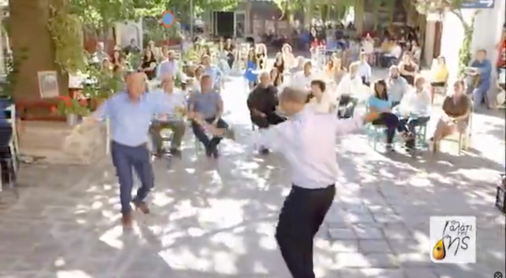
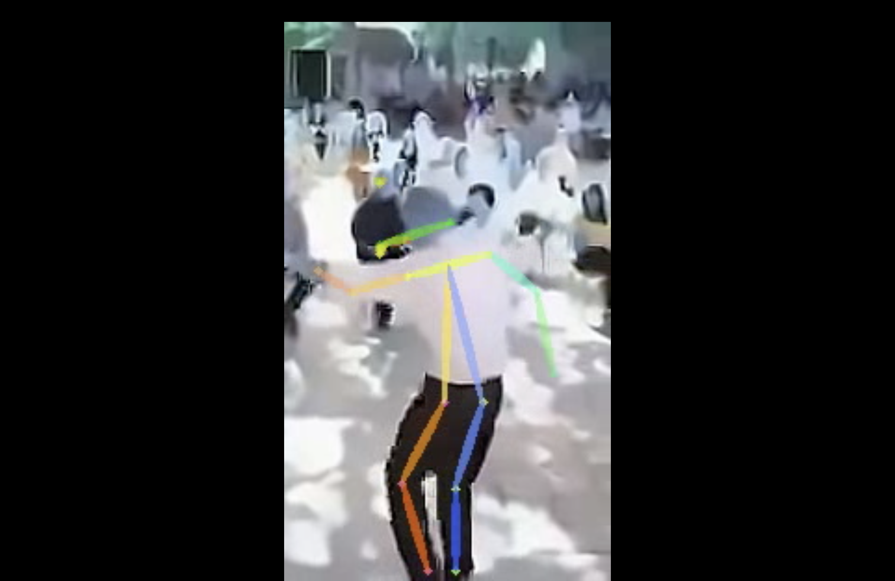
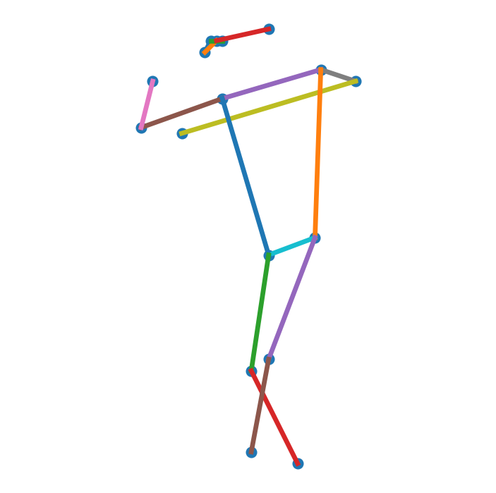
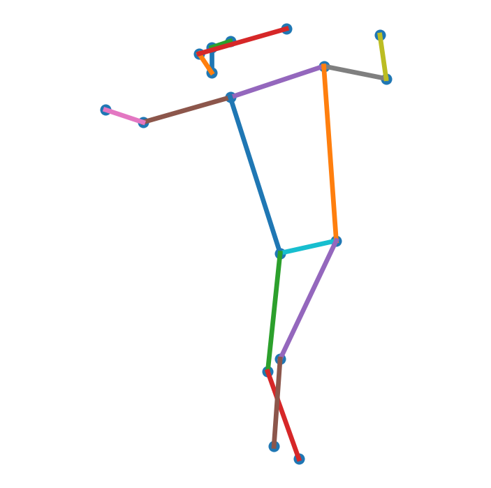
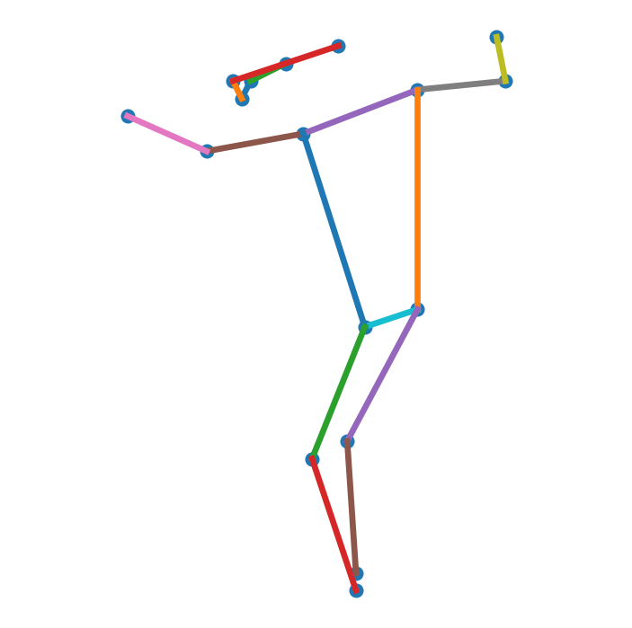
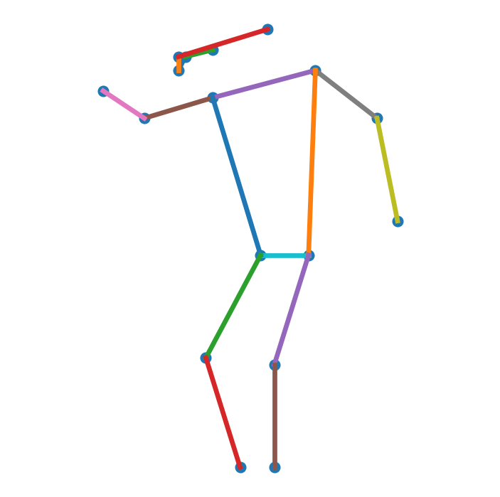
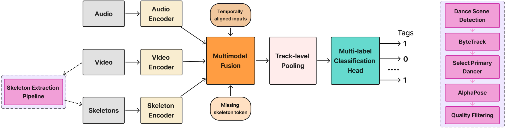

Dance scene
A dance-related scene is identified in the original video recording.
Pose-Aware Multimodal Music Tagging
Exploring multimodal automatic tagging for Greek traditional music using audio, video, and dancer-pose representations.
Research overview
Loading experiment information…
Pose extraction
Dance scenes are detected in broadcast footage. The pipeline tracks people, selects a primary dancer, estimates body keypoints, and retains a quality-filtered pose representation for motion analysis.

A dance-related scene is identified in the original video recording.
Tracking identifies a primary dancer for downstream pose extraction.

AlphaPose estimates 17 COCO body joints for the selected dancer.

Quality-filtered pose coordinates and motion features form the input.
Motion over time
The skeleton encoder receives a temporal sequence rather than one static pose. Consecutive skeleton frames capture the dancer's evolving motion.




Model explorer
All configurations
End-to-end system
Audio, video, and pose-derived skeleton representations are temporally aligned, fused, and aggregated at track level to predict multiple semantic music tags.
